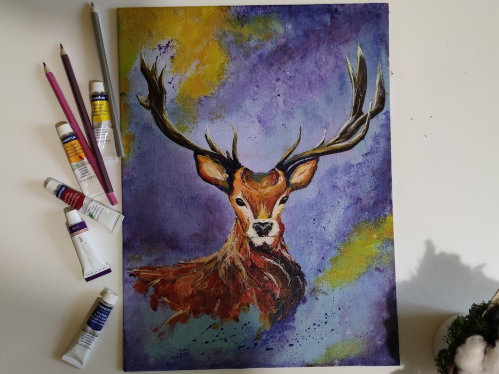

The Who
I’m Daria, a wandering soul from the charming corners of Moldova, here to share a bit of my story with you. Picture this: a small-town child who somehow ended up diving deep into the world of finance. Funny how life works, right?
The How
I hold a Ph.D. in Finance, a Master's in Banking and Finance, and a
Bachelor's in International Business. Fancy titles (are they really?!)
but what sets me apart is my unyielding curiosity and passion for
understanding the intricacies of numbers.
You see, I didn’t start out aiming to decipher balance sheets and
create financial models. My heart initially leaned towards a life as a
diplomat, exploring the world, and soaking in diverse cultures. But
well, life had its plans, and I found myself captivated by the
analytical challenges of the financial realm.
The What
I’m that person who gets lost in the details, finding beauty in the
complexity. One of my proudest moments? Building a working prototype
of a sentiment analysis scale with my amazing colleagues. It's not
just a project; it's a testament to our teamwork and determination.
Challenges? Bring them on! I believe they're like puzzles, waiting to
be solved. But hey, I’ve learned the importance of balance too. It’s
not just about work. I find solace in my sketches; animals and
landscapes are my favorite subjects. Crochet and crafts? Count me in.
And oh, traveling? An adventure I never say no to.
The Why
I owe my work ethic to my mother, a strong, determined woman who
taught me the value of hard work. Despite my degrees, I find wisdom in
unexpected places; for instance, Rafiki, the wise old philosopher, who
still is my spirit guide.
Looking ahead, I’m on a mission. I want to speak the language of the
digital age, understand the IT world a bit better. It’s not about
changing who I am, but about expanding my horizons. And introverts? We
have a voice too, and I'm here to make sure it’s heard.
A Piece of Mind
|  | ||
| The Bear | The Deer | The Fox |
So, that’s me - a humble soul with a love for numbers, art, and a
heart that beats for the introverts.
Thanks for taking a moment to peek into my world.